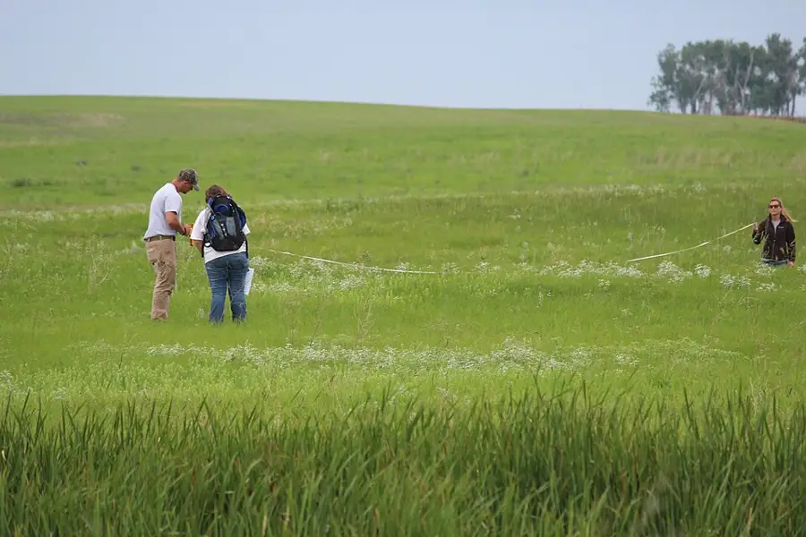

Transect Line Field Survey
Teens survey one fixed line across real ground. Quadrats at set intervals, every plant and surface recorded square by square, season after season.
Before you begin
- Ages
- 13–14
- Group
- 4–16 kids
- Time
- 45–60 min
- Where
- Outdoors
- Prep
- Some prep needed

Setup
Walk the ground before the line is promised, and choose the line the way a surveyor chooses it: it should cross a real change, path edge to open grass, sun to shade, dry to damp, because a line across sameness will record the same square ten times and teach the crew that surveying is copying. Fix the two ends by landmarks a stranger could find from the book's description alone, photograph or sketch the line's run for the book's first page, and agree with whoever owns or manages the ground that the line may be re-walked across the seasons. The survey's whole value is return, so the permission is for the year, not the afternoon. Set the quadrat intervals now and write them on the book's first page as law: the same number of squares, at the same measured intervals, at the same frame size, every round, whatever the ground is doing that day. Check the guides against the ground on your own walk, note the handful of kinds the crew will meet constantly, so the framing can name them honestly as the line's regular citizens.
Materials
- a transect line that can stay honest (a long tape or a marked rope of fixed length, with its two end points fixed by landmarks the crew can find again in any season, a gate post, a path corner, a named tree, because a line that wanders is a new survey every round)
- quadrat frames, one per survey pair (a square frame of a stated size, made or borrowed. Every pair's square the same size, because counts from different-sized squares cannot be compared and the survey lives on comparison)
- the survey sheets and the line book (one sheet per round: date, weather, last rain, and a row per quadrat, what grows, what covers, what the surface is, kept in a hardback book that is the line's whole memory)
- the site guides (a trusted flora and field guide from the site's shelf, used at the square, in the hand of the pair working it. Names are given only as far as the guide honestly carries them)
Steps
- The framing, at the line's near end, tape still rolled: 'The line does not move; that is what makes it evidence. Today we lay one line across this ground and we read it square by square, not the prettiest square, not the interesting corner, the squares the intervals give us, in order, whether each one thrills us or bores us. A survey that only records what catches the eye is a walk with a notebook. Ours records what is actually there: every kind we can name, named only as far as the guide carries us; every kind we cannot name, described so honestly that next round's crew can tell whether it is the same stranger again. Cover is estimated square by square and argued out loud between the pair before it is written, because two estimates averaged in the open are worth ten written in silence. When this line is re-walked in another season, the book will be able to say what changed, and it will only be able to say it if today's squares were read at the same intervals, in the same way, with the same honesty about the dull ones.' The line is laid, the ends are checked against the book's landmarks, and the first quadrat is placed by measurement, not by eye.
- The survey round, worked square by square in the line's own order: each pair takes its quadrat at its interval, sets the frame flat without flattening what grows inside it, and reads the square in the sheet's fixed order, surface first (bare earth, leaf litter, stone, path, water), then cover by kind, estimated in quarters and argued aloud as the framing promised, then the citizens: every plant kind present, named from the guide or described as a stranger ('narrow, glossy, three leaves, no flower, square four'), and any animal evidence entered as evidence, a feather, a burrow mouth at the frame's edge, a web, never inflated into a sighting. The sheet's rule for names is the survey's honour: a name the pair cannot support from the guide is written as a description, because a wrong name in the book will be believed by strangers, and a good description will be recognised by them. Pairs call their finished square to the book-keeper, who reads the entry back before the frame moves. A square is not surveyed until the book holds it.
- The comparison round, at the table or the line's end, while the ground is still in view: the new sheet is read against the line's last round, square by square, and the differences are entered in the book's comparison page in the survey's plain shapes, arrived, vanished, spread, thinned, unchanged, with the season and the weather entered beside them, because a difference without its season is a riddle the book sets its own readers. The crew names its surprises honestly and its non-surprises with equal respect: a square that has not changed in a year of rounds is a finding, and the book says so, because stability is information a one-off visit can never give. Any square the pairs argued over longest is marked for the next round's first check, the survey's way of admitting where its own eyes are weakest, and unknowns that have now appeared in three rounds running are taken to the guides a second time, together, with the book's descriptions as the evidence.
- The disturbance law, taught before the first boot crosses the line and kept every round: the crew works from the line's side, never walks the squares it is about to read, and replaces anything it lifts. A stone turned for the reading goes back turned-side down as it lay, because the survey visits the ground, it does not rearrange it. Anything the crew cannot read without damaging, a nest at a quadrat's heart, a patch too fragile to frame, is entered as present-but-unread, with the reason, and that entry counts as a completed square: the survey's respect for its ground outranks its appetite for a full sheet, and the book says so in the round's notes where the next crew will learn the law from the record as well as the framing.
- Closing the round, the line is rolled and the book is finished at the ground: the crew walks the line once at a stranger's pace, checking the ends' landmarks against the book's description and correcting the description if the ground has changed it, a fallen branch, a moved fence, because the next crew finds the line by those words. The round's closing page is written together: squares read, kinds named, strangers described, the comparison's headline changes, and the one square the crew would show a visitor to explain what a transect is. The tell-back is said standing on the line's ground: 'This line was here before us and it will be walked after us, by crews reading the same squares at the same intervals, and the book will keep what we all found in the same order. We did not pick the pretty corners. We read what the intervals gave us, we named only what we could prove, and we left the ground as it lay. That is a survey: the line does not move, and neither does the truth about it.' The tape, frames and book are stored together where the next round, this crew's or another's, will find the whole survey in one place.
Variations
Easier: A one-square version (a first crew or a tiny ground): a single quadrat read entire, argued entire, and entered entire. The whole discipline at one square's scale, with the book opened and the laws stated, ready to grow a line next round.
Harder: A two-line version (a confident second-season crew): a second line laid at right angles across the first's most changeable stretch, read on the same day by the same crew, with the crossing square read twice and the two readings compared in the book.
Safety
The ground sets this record's laws and they are read at the line's end before the tape unrolls: the crew works the ground the adults have walked and approved for that day. A line is re-walked only when its ground is in an ordinary state, and flood, ice, nests in season, or any works on the ground postpone the round, with the postponement entered in the book as a finding, not a failure. Nobody leaves the line's ground alone; pairs stay within call of the book-keeper, and the route in and out is the route walked at setup, over the firmest ground the site offers. Plants are read, never tasted. A kind the guide names as harmful is entered from a full step away, and hands that have worked squares of unknown kinds are washed before food, without exception. Anything sharp the ground surrenders, glass, wire, a lost blade, is lifted by the adult's gloved hand into the sharps tin the adult carries, never a crew member's pocket, and the square's entry notes the find. Tools are only tape, frames and books; the survey carries nothing that cuts, and that is deliberate.
Inclusion notes
A survey divides its authority as fairly as its line divides the ground: the book-keeper, seated at the line's end or at the table the ground allows, with the sheets, the guides and the comparison pages, holds the survey's memory and reads every entry back, which makes the keeper's the casting voice on what the book holds. Quadrat pairs share the reading by strength and reach as they agree it: one frames and steadies, one reads and names, and the arguing of cover, the survey's intellectual heart, is talk, open to every member of the pair at full standing. Squares can be read from photographs a pair takes square-on at the frame, identified and estimated at the table by readers whose ground is the book rather than the field; their estimates carry the same ink, argued the same way. The route to the line is chosen at setup for the firmest, most step-free approach the site offers, the round's length is set by the slowest pair's honest pace and stated in advance, and the rota of rounds is published by season. The line does not move, and nobody is surprised by it.
Tried this? Rate it
Your ratings live in this browser only. Nobody else can see them. There are no community ratings here; every star on this card is yours.
Rate this activity, add a note, or write a reflection
Quick reflection
Optional, saved with your rating, and exported with "Copy my week".
Full activity card,